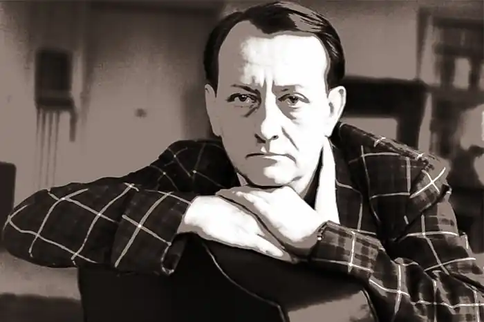
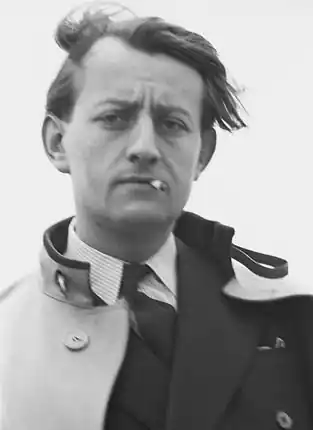
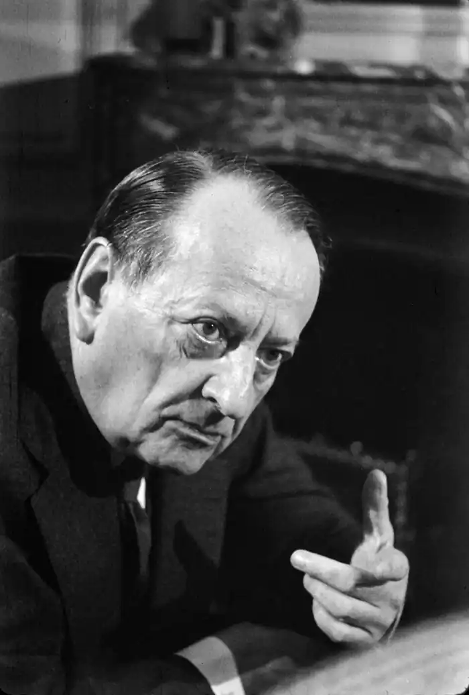
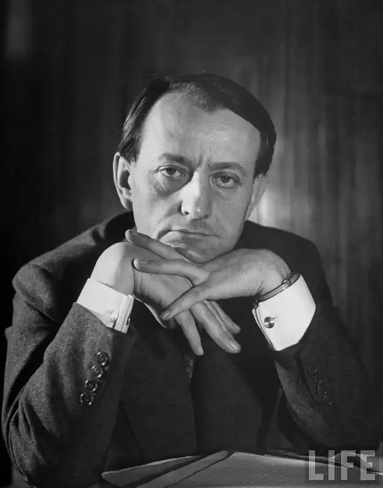
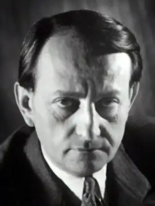

(03.11.1901 — 23.11.1976)
Навчався в ліцеї Кондорсе і Національній школі східних мов, захоплювався антропологією, археологією та історією. У 1924 здійснив подорож в Індокитай, а після 1925 перебрався до Китаю.
Народився 3 листопада 1901 в Парижі, в родині банкіра. Навчався в ліцеї Кондорсе і Національній школі східних мов, захоплювався антропологією, археологією та історією. У 1924 здійснив подорож в Індокитай, а після 1925 перебрався до Китаю. Тут він зблизився з революційними партіями і протягом декількох років активно підтримував комуністів. Аж до 1927 брав участь у пропагандистській роботі революційних угруповань Кантону і Шанхаю, після розриву Чан Кайші зі своїми союзниками-комуністами повернувся в Європу. Перша книга письменника, Спокуса Заходу (La Tentation de l Occident, 1926), являє собою ідеологічний спір китайця з європейцем. Роман Завойовники (Les Conqu rants, 1928) заснований на реальних подіях – спроби здійснити революцію в Кантоні. Роман Королівській дорозі (La Voie royale, 1930) – спроба психологічного трилера на тлі древніх храмів Камбоджі. Світову славу приніс письменникові визнаний шедевром роман Доля людський (La Condition humaine, 1933). У центрі його – змова з метою створити новий Китай; поряд з китайськими революціонерами в підприємстві бере участь кілька європейців авантюрного складу; більшість змовників гинуть в результаті зради. Мальро опублікував ще три романи – Роки презирства (Le Temps du m pris, 1935), де дія відбувається в німецькій в'язниці; Надія (l'espoir, 1937), мабуть, найкраща книга про громадянську війну в Іспанії і найсумніший з усіх романів Мальро; і досить абстрактний і ідеологізований роман Орішники Альтенбург (Les Noyers de l Altenbourg, 1942). Після 1933 Мальро зі зброєю в руках захищав свої політичні переконання, багато подорожував, знайомлячись з пам'ятками культури. Під час Громадянської війни в Іспанії був льотчиком на службі Республіки. Однак жорстокості, вчинені комуністами, і анархія в стані республіканців незабаром змусили його переглянути свої погляди. Під час Другої світової війни Мальро спочатку воював в танковому корпусі французької армії, потім пішов у підпілля, став героєм Опору і закінчив війну полковником регулярної армії. Після 1945 поряд з різноманітними творами, присвяченими політиці, кінематографу та літератури, Мальро опублікував багато мистецтвознавчих статей. Його праці на цю тему зібрані в книгах Голоси безмовності (Les Voix du silence, 1951) і Метаморфоза богів (La M tamorphose des dieux, 1957). В 1958 році, коли де Голль вдруге прийшов до влади, Мальро отримав портфель міністра у справах культури. У 1967 Мальро видав автобіографію Антимемуары (Antim moires). Настільки ж невідпорно зваблива, як і його романи, вона відрізняється фрагментарним, імпресіоністичним стилем і описує драматичні події, дух часу і філософські бесіди з такими особистостями, як Неру і Мао Цзедун. У книзі Зрубані дуби (Les Ch nes qu'on abar, 1972) відтворені бесіди Мальро з де Голлем. Помер Мальро в Парижі 23 листопада 1976.